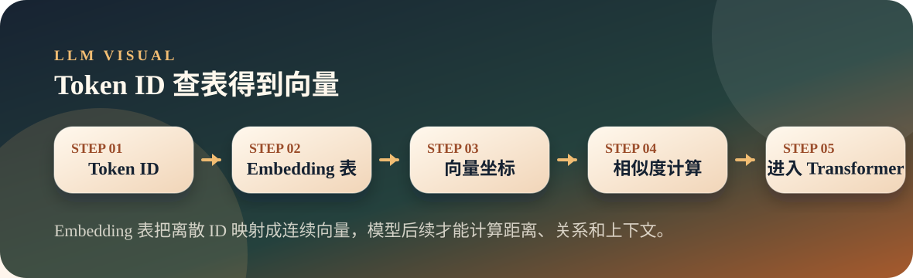

从零开始理解大模型
03. 向量与 Embedding：把文字变成数学
Token ID 只是编号，模型还需要把它查成一串向量，才能在数学空间里计算相似、关系和上下文。
EmbeddingVectorSimilarity
Thesis
文章主旨
Token ID 只是编号，模型还需要把它查成一串向量，才能在数学空间里计算相似、关系和上下文。
模型看到 Paris 不是看到一个城市名字，而是看到一串向量。向量之间的距离和方向，承载了“相似”“相关”“语义靠近”等信息。
Visual
图解主线

Embedding 像给每个 token 发一张数学身份证：不是写着姓名，而是写着一串特征坐标。
Explain
概念展开
这一页先把文章里的关键判断讲顺，再用一个小观察帮助落地。
- Embedding 把 token ID 变成可计算的向量。
- 向量相似度可以表达粗粒度语义关系。
- 同一个 token 的最终表示会被上下文改写。
- 模型不能直接算文字，只能算数字向量。
- Embedding 表本质上是一张大查找表。
- 上下文感知不是 Embedding 单独完成的，而是 Transformer 层逐步加工的结果。
Small Check
可选小实验
用一组词的相似度观察 Embedding 如何表达关系。 实验只用于观察现象，不作为本页主线。
可选实验命令
python3 llm/03-embedding/embedding.py "France" "Paris" "Germany" "Berlin" "cat" "dog"embedding.py会打印 Embedding 表形状：词表大小 × 向量维度。- 语义相关的词通常会有更高相似度，例如国家和首都、动物和动物。
- 这个实验只看向量入口，真正的语境加工会在后续 Transformer 层发生。
Map
前后关系
这一页不是孤立知识点，它在整条大模型主线里承担一个具体位置。
- 上一页「Token」提供了前置概念，这一页把它推进到「Embedding」。
- 下一页「Attention」会沿着这条线继续展开，避免把单个概念孤立记忆。
- 本页只抓一个关键词：Embedding Vector。现场讲解时先讲文章结论，再用图示解释为什么。
Boundary
易混点
- 不要把向量维度理解成可人工命名的属性列，它们通常不是人类可读字段。
- 向量相似不等于事实正确，只表示表示空间里的接近。
- 静态 Embedding 无法单独解决一词多义。
Extend
继续阅读
教学页以讲清文章为主；完整原文与配套脚本保留在仓库中，方便分享后继续查阅。